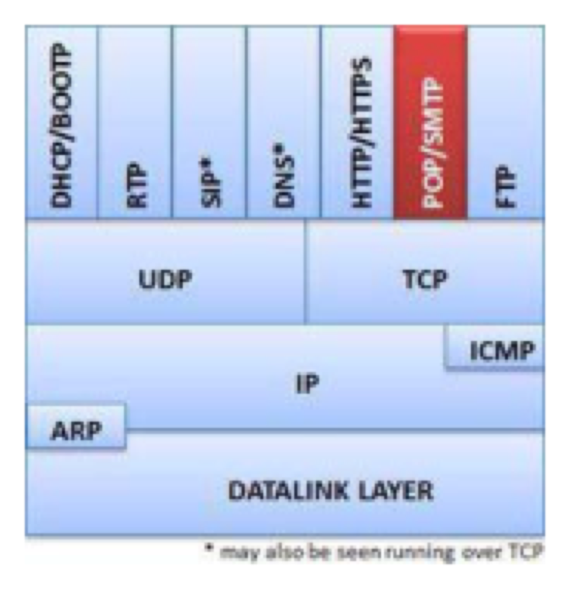
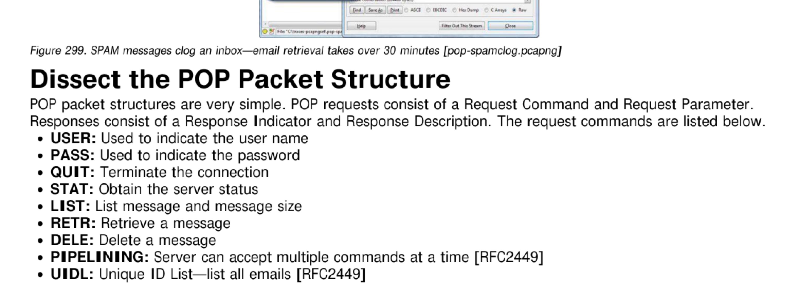
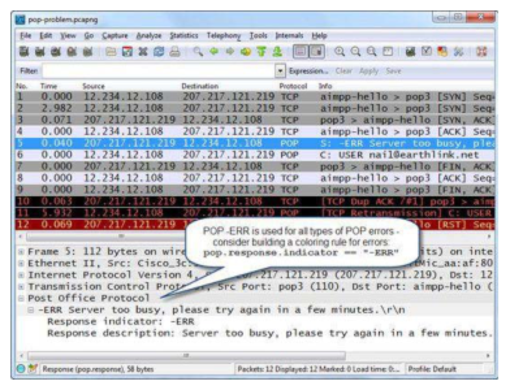
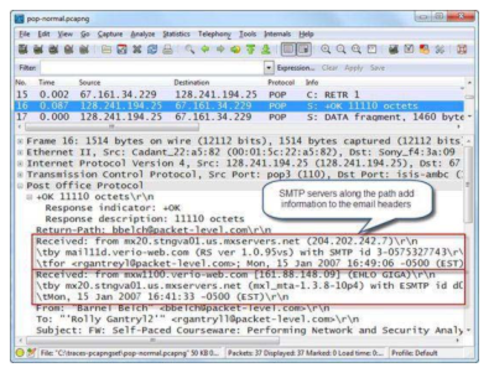
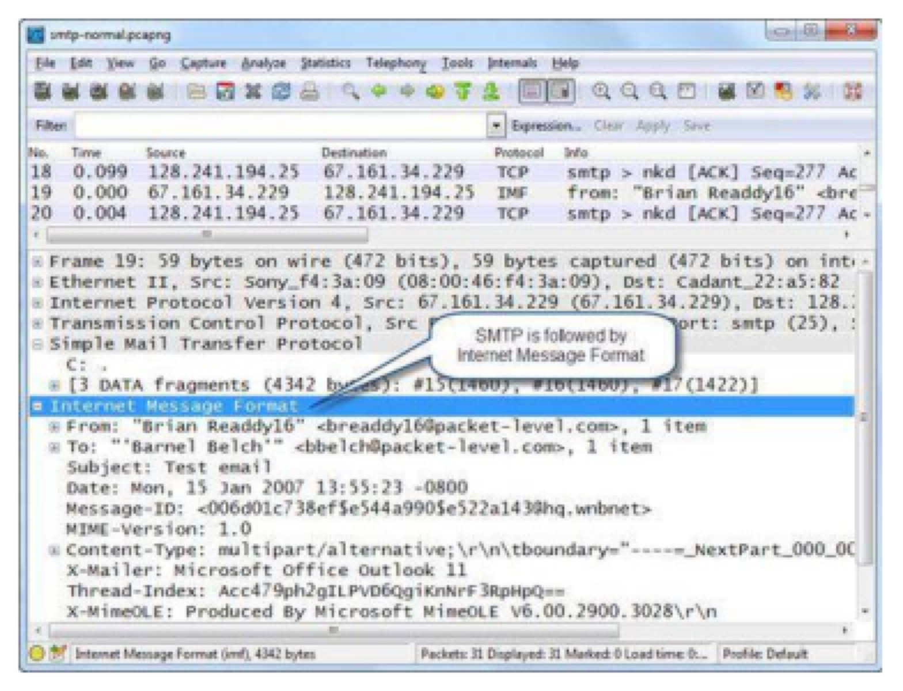
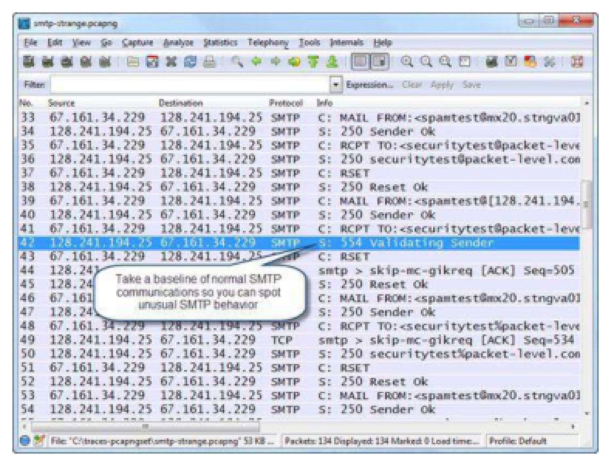
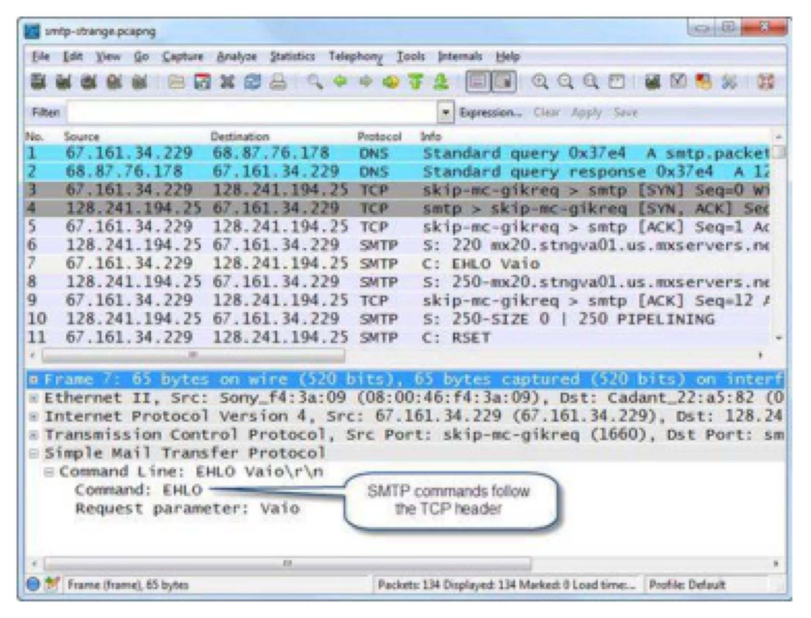
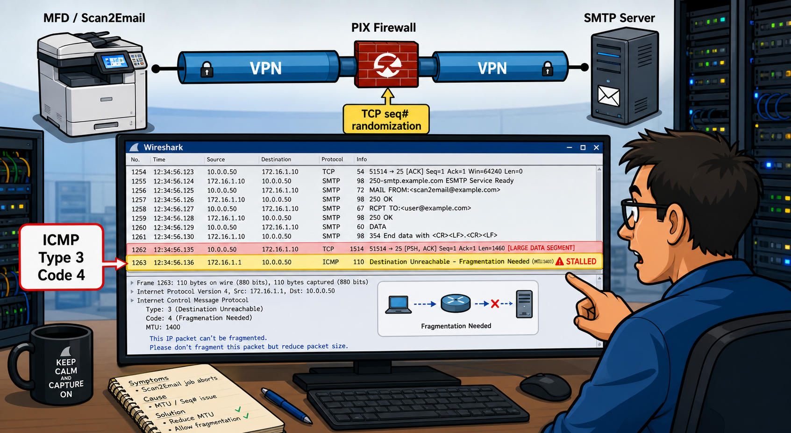

POP downloads email to your device and typically deletes it from the server. Before building a display filter, which port does POP use, and what are the only two response indicators the protocol ever sends?
When a POP mailbox is flooded with spam, the client downloads every message including binary attachments -- sometimes taking 30+ minutes. How would you detect this pattern in Wireshark, and what filter would isolate only the RETR commands?
POP — Post Office Protocol
POP (Post Office Protocol, RFC 1939) is a popular method for retrieving email. IMAP (RFC 1730) is another common retrieval protocol. POP itself does not provide security in email data transfer; third-party tools provide that added functionality. This chapter covers POP and SMTP (Simple Mail Transfer Protocol). POP does not maintain a persistent connection -- the connection is established to retrieve email and then terminated upon successful completion.

Analyze Normal POP Communications
In Figure 297 Wireshark's Info column provides enough detail on POP communications to interpret the entire process. The POP user provides their username and password. The POP server opens the mailbox and tells the user that one message is waiting (11,110 bytes). The client asks for the Unique Identification Listing (UIDL) before issuing the RETR command. Upon successful download, the client sends DELE to delete the message, the server confirms, and the session terminates.

Analyze POP Problems
Problems can begin at the TCP connection level and can also be affected by high latency and packet loss. As shown in Figure 298, a client cannot log in -- the server indicates it is too busy. Before the -ERR response, the client also had to issue two TCP SYN packets (retried handshake). This indicates a capacity issue at the POP server.

Spam-clogged mailboxes can severely affect performance. In Figure 299, a client's mailbox is filled with spam messages with binary .pif attachments. The client complained that email download took over 30 minutes but did not mention spam -- because messages were auto-sorted to the spam folder. More aggressive spam filtering at the POP server is the fix.
POP Packet Structure
POP requests consist of a Request Command and Request Parameter. Responses consist of a Response Indicator and Response Description. Key commands:
| Command | Purpose |
|---|---|
| USER | Provide user name |
| PASS | Provide password |
| STAT | Obtain server status |
| LIST | List messages and sizes |
| RETR | Retrieve a message |
| DELE | Delete a message |
| UIDL | Unique ID List -- list all email IDs [RFC2449] |
| QUIT | Terminate the connection |
There are only two response indicators: +OK and -ERR. Figure 300 shows a RETR response including the email header and body.

Filter on POP Traffic
Capture filter: tcp port 110. Display filter: pop (shows only POP commands; no TCP handshake or ACKs). To view all related packets: tcp.port==110.
| Filter | What It Matches |
|---|---|
pop.response.indicator=="+OK" | POP success responses |
pop.response.indicator=="-ERR" | POP failure responses |
pop.request.command=="USER" | POP USER commands |
(pop.response.indicator=="+OK") && (pop.response.description contains "octets") | Email size listings -- useful for spotting spam with attachments |
SMTP uses numerical response codes to signal status. What does a code above 399 tell you, and how does EHLO differ from HELO in the handshake sequence?
An MTU/ICMP mismatch can silently abort an SMTP DATA transfer. What sequence of events in the packet trace would reveal that an ICMP Type 3 Code 4 message caused the session to stall?
SMTP — Simple Mail Transfer Protocol
SMTP is the de facto standard for sending email, defined in RFC 5321. Default port is 25 (though many ISPs block port 25 to reduce spam). SMTP messages are delivered in Internet Message Format (RFC 2822). By default, SMTP communications are not secure.

Analyze Normal SMTP Communications
After a successful TCP handshake, the SMTP server responds with code 220 (service ready). The client sends HELO (standard) or EHLO (extensions supported). When EHLO is used, the server sends its capability list -- for example, indicating pipelining support (client can send additional requests without waiting for each response). The SMTP client then sends MAIL FROM, RCPT TO, and DATA. The server responds to DATA with 354 Start Mail Input. After sending the email, the client issues QUIT.
![Figure 302: An SMTP client sends an email message [smtp-normal.pcapng]](../all-chapter-figures/fig302-an-smtp-client-sends-an-email-message.png)
Analyze SMTP Problems
SMTP problems can begin at TCP connection level. If the server responds with codes above 399, it is indicating a problem. Figure 303 shows an unusual pattern: a host performing an SMTP relay test by generating a series of MAIL FROM addresses. This could indicate malware, or it could be a deliberate security test (here, NetScanTools Pro was used). Many RCPT TO lines receive 553 Invalid Recipient. After each attempt the sender generates a RST. Email communications should always be baselined to identify this type of unusual behavior.

SMTP Packet Structure
SMTP commands and response codes follow immediately after the TCP header. Figure 304 shows an EHLO command packet where the command is followed by the host name parameter.

| SMTP Command | Purpose |
|---|---|
| HELO | Initiates a standard SMTP session |
| EHLO | Initiates SMTP session with mail service extensions |
| Initiates mail transfer (MAIL FROM) | |
| RCPT | Identifies the mail recipient (RCPT TO) |
| DATA | Initiates mail data transfer |
| VRFY | Verifies recipient exists |
| RSET | Aborts the current mail transaction |
| QUIT | Closes the SMTP connection |
| Code | Meaning |
|---|---|
| 220 | <domain> service ready |
| 250 | Requested action okay and completed |
| 354 | Start mail input |
| 421 | <domain> service not available |
| 450 | Mailbox unavailable |
| 550 | Mailbox unavailable (permanent) |
| 553 | Mailbox name not allowed |
| 554 | Transaction failed |
Filter on SMTP Traffic
Capture filter: tcp port 25. Display filter: smtp.
| Filter | What It Matches |
|---|---|
smtp.req.command=="EHLO" | Client supports extensions |
smtp.response.code > 399 | Server indicates a problem |
Case Studies
Facts: (1) Scan device was a multifunctional device (MFD). (2) Connected to the SMTP server via an IPsec VPN over the Internet. (3) The MFD supported passive MTU discovery and did not allow IP fragmentation.
Symptoms: The Scan2Email job was simply aborted by an unknown cause. With Wireshark, the SMTP handshake worked fine but data transmission failed when a router sent an ICMP Type 3 Code 4 (Fragmentation Needed) packet. The MFD did not resend using a smaller MTU despite supporting Path MTU Discovery.
Cause: The customer used a Cisco PIX firewall that performed TCP sequence number randomization. The TCP sequence number in the original MFD packet differed from the number in the TCP header portion of the ICMP Type 3 Code 4 packet. The MFD rejected the ICMP packet as invalid (a security function) -- preventing Path MTU Discovery from working.
Solution: (a) Reduce the MTU size on the VPN gateway router to the max MTU defined in the received ICMP Type 3 Code 4 packet. (b) Allow IP fragmentation on the MFD.

POP and SMTP are used to receive and send email, respectively. POP communications rely on a username and password; basic SMTP does not authenticate the sender. Both run over TCP -- POP on port 110, SMTP on port 25.
POP uses only two response indicators: +OK or -ERR. SMTP responses use numerical codes; codes greater than 400 indicate problems. EHLO (extensions) vs HELO (standard). Spam-clogged mailboxes cause long POP download times even when the user is unaware. MTU/ICMP mismatches can silently abort SMTP DATA transfers.